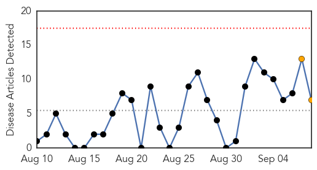
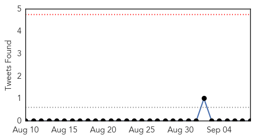
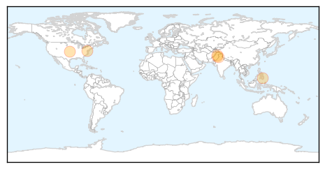
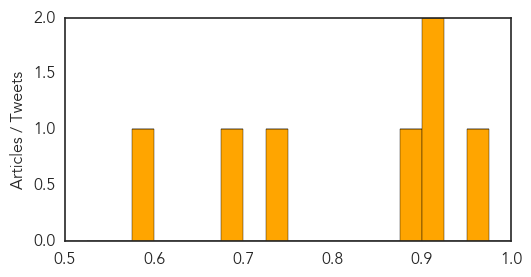

Toggle navigation
Early Warning
Daily Alerts
Dengue Fever
Sep 08, 2014
Compare to:
-
Hemmorhagic Fever
Mold/Fungal Infection
Influenza
Meningitis
Pertussis / Whooping Cough
Middle East Respiratory Syndrome
Cholera
Hepatitis
Chikungunya
Yellow Fever
Bubonic Plague
West Nile Virus
Swine Flu
Ebola
Measles
Unknown
Mumps
30 Day Trends
Web: 0
alerts
, 2
warnings
Twitter: 0
alerts
, 0
warnings
Top Articles:
0.951
Minister confirms 1, 000 dengue positive cases in Odisha
0.923
Japanese firm may market dengue vaccine in 2017
0.905
Experts warn about temporary 'spikes' caused by 'dengue vaccine'
0.895
Dengue cases down 61% so far this year
0.732
Anti-dengue day observed
0.687
Health awareness: SMS service started to control dengue
0.588
Two places sealed under anti-dengue drive
Top Tweets:
0.582
Flavivirus news: Ministry closes Shinjuku Gyoen National Garden amid dengue fever outbreak - Th... http://t.co/FVvq6spHMx pathogenposse
Web/News Articles

Tweets

Article Locations

Article Confidences
